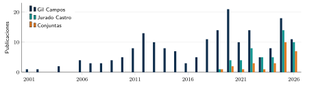

2 Grupo GC23 Metabolismo infantil
| Sección | Lectura | Estudio |
|---|---|---|
| Trabajos previos GC23 | 22 min | 45 min |
| Mapa bibliométrico de los colaboradores | 4 min | 5 min |
| Capítulo completo | 34 min | 1 h |
Idea del capítulo. El grupo GC23 ha estudiado cuánta actividad hace un niño y cómo se reparte esa producción; el hueco que deja abierto se mide en el capítulo siguiente. núcleo
Objetivos de aprendizaje
Al terminar este capítulo deberías ser capaz de:
- situar dos de las cohortes del grupo (GENOBOX y MELI-POP) por edad, diseño, protocolo de acelerometría y acceso a los datos;
- explicar por qué los mismos niños dan de 1,5 a 15,3 min/día de actividad vigorosa según el protocolo, y qué pesan en ello el punto de corte y la duración del epoch;
- señalar qué no ha medido nunca el grupo (señal RAW, ritmos circadianos, luz) y dónde encaja ahí Brincadiano.
Conocimientos previos. El HOMA-IR y los estadios de Tanner del cap. 1. Ayuda saber qué es un punto de corte de counts (cap. 4, Sección 4.5).
Lecturas esenciales
Una lectura. Los tiempos y la dificultad para ingeniería (1 = baja, 3 = alta) son los del informe y son orientativos.
Pasa el cursor (o toca) sobre la cita para ver la referencia completa. Los niveles son los del informe: imprescindible, para profundizar y consulta.
Imprescindible
Llorente-Cantarero et al. (2021b) · «Evaluation of Sedentary Behavior and Physical Activity Levels Using Different Accelerometry Protocols in Children from the GENOBOX Study» (artículo, Sports Medicine - Open).
Trabajo del grupo que muestra cuánto cambian sedentarismo y AF según el protocolo de acelerometría: punto de partida metodológico de Brincadiano.
- Tiempo ≈ 1 h
- Dificultad 1/3
- Sección Sección 2.1
- DOI 10.1186/s40798-021-00365-z
Genealogía de la idea.
- 2012 · condición física y HOMA-IR. En escolares prepúberes de Córdoba, una baja condición cardiorrespiratoria se asocia con más insulina y mayor HOMA-IR (Llorente-Cantarero et al. 2012b).
- 2020 · patrones de AF (GENOBOX). Los patrones de actividad se agrupan en perfiles, y el menos activo tiene más insulina, HOMA-IR y triglicéridos (Leis et al. 2020).
- 2021 · los protocolos importan. Con los mismos niños, la actividad vigorosa cambia hasta diez veces según el punto de corte (Llorente-Cantarero et al. 2021b).
Este capítulo se centra en el grupo GC23 Metabolismo infantil del IMIBIC: qué han publicado sobre actividad, sueño y riesgo cardiometabólico, y cómo se reparte esa producción. El estado del arte y la hipótesis están en el cap. 3. Los conceptos clínicos —obesidad, HOMA-IR y por qué importa el momento de la actividad— están en el cap. 1.
2.1 Trabajos previos GC23
Fuentes de la sección: Llorente-Cantarero et al. (2012b); Llorente-Cantarero et al. (2012a); Leis et al. (2020); Llorente-Cantarero et al. (2020); Llorente-Cantarero et al. (2021b); Llorente-Cantarero et al. (2021a); Gil-Campos et al. (2021); Llorente-Cantarero et al. (2022a); Llorente-Cantarero et al. (2022b); Khoury et al. (2024); Iglesias-Vázquez et al. (2025); Skapino et al. (2025); De Miguel-Etayo et al. (2025); Larruy-García et al. (2026); Jurado-Castro et al. (2019); Jurado-Castro et al. (2022); Jurado-Castro et al. (2020).
Los datos de Brincadiano proceden del grupo GC23 Metabolismo infantil del IMIBIC, que dirige la Dra. Mercedes Gil-Campos (Hospital Universitario Reina Sofía, Universidad de Córdoba), con el que se colabora. Este apartado resume sus trabajos sobre actividad física (AF), acelerometría, sueño y riesgo cardiometabólico infantil. La búsqueda se hizo en PubMed el 2 de octubre de 2026 (Gil-Campos M[Author] y Jurado-Castro JM[Author]): de 61 registros, 33 tratan de AF, sueño, condición física o luz en población infantil. El método se extrajo del texto completo cuando era de acceso abierto.
| Año | Referencia | Autores | Cohorte y muestra | Qué aporta | Para Brincadiano |
|---|---|---|---|---|---|
| 2012 | Llorente-Cantarero et al. (2012b) | MGC | Escolares prepúberes de Córdoba | Baja condición cardiorrespiratoria → más insulina y HOMA-IR | Primer vínculo del grupo entre forma física y HOMA-IR |
| 2012 | Llorente-Cantarero et al. (2012a) | MGC | 137 prepúberes (7–12 años); AF por cuestionario | El sexo modifica la relación entre AF, condición física y metabolismo | Explorar la interacción con el sexo |
| 2019 | Jurado-Castro et al. (2019) | MGC, JMJC | Revisión para pediatras | 15–20 min de AF vigorosa ≈ 60 min de AFMV | Respalda centrarse en la AF vigorosa |
| 2020 | Leis et al. (2020) | MGC, JMJC | GENOBOX: 489 prepúberes, acelerometría | Conglomerados de AF; el sedentario tiene más HOMA-IR | Antecedente de los fenotipos de 24 h (línea 3) |
| 2020 | Llorente-Cantarero et al. (2020) | MGC | GENOBOX: 75 niños de prepúber a púber | El sedentarismo sube un 50 % con la pubertad | Ajustar por pubertad o restringir a prepúberes |
| 2020 | Jurado-Castro et al. (2020) | MGC, JMJC | Metaanálisis de intervenciones escolares | Intervenciones en obesidad evaluadas con acelerometría | Contexto de intervención |
| 2021 | Llorente-Cantarero et al. (2021b) | MGC, JMJC | GENOBOX: 543 niños | La AF vigorosa va de 1,5 a 15,3 min/día según el punto de corte | Justifica la señal RAW y los umbrales explícitos |
| 2022 | Llorente-Cantarero et al. (2022a) | MGC | GENOBOX, acelerometría | Más AFMV, mejor perfil lipídico; el HOMA-IR se liga más al IMC | Ajustar por adiposidad y volumen |
| 2022 | Llorente-Cantarero et al. (2022b) | MGC | GENOBOX: 275 prepúberes con HOMA-IR y acelerometría | Los metabólicamente sanos son más activos | Tamaños de efecto para la potencia |
| 2022 | Jurado-Castro et al. (2022) | MGC, JMJC | Revisión de métodos | Sin consenso de análisis; el valor de los sensores de luz, por estudiar | Respalda la línea de luz |
| 2025 | Skapino et al. (2025) | MGC | GENOBOX Zaragoza: 264 con DXA | Grasa e inflamación, separando grasa y masa magra | DXA solo en Zaragoza; técnica de residuos |
| 2025–26 | De Miguel-Etayo et al. (2025) | MGC, JMJC | MELI-POP: ensayo, 206 preescolares | Protocolo y resultados a 12 meses (Larruy-García et al. 2026) | HOMA-IR muy bajo con probable suelo de medida |
La tabla 2.1 reúne los doce trabajos de la Dra. Gil Campos y del Dr. Jurado Castro más relevantes para este estudio, con lo que aporta cada uno; los párrafos siguientes los agrupan por etapa y cohorte.
Condición física y riesgo metabólico (2009–2013). En escolares prepúberes de Córdoba, una baja condición cardiorrespiratoria se asocia con más insulina y mayor HOMA-IR (Llorente-Cantarero et al. 2012b), con diferencias entre niños y niñas (Llorente-Cantarero et al. 2012a).
Cohorte GENOBOX (5–14 años). Es la primera serie del grupo con acelerometría (ActiGraph GT3X+, cadera derecha). Aporta cuatro resultados:
- Los patrones de AF se agrupan en perfiles, y el menos activo tiene más insulina, HOMA-IR y triglicéridos (Leis et al. 2020).
- El grupo con menos AF moderada-vigorosa (MVPA) muestra peor perfil lipídico, más insulina y más marcadores inflamatorios (Llorente-Cantarero et al. 2022a).
- Entre los prepúberes con exceso de peso, los que mantienen un perfil metabólico sano se mueven más que los que lo tienen alterado, y la diferencia no depende del grado de exceso de peso (Llorente-Cantarero et al. 2022b).
- La AF ligera cae en torno a un 30 % de la etapa prepuberal a la puberal (Llorente-Cantarero et al. 2020).
Otros trabajos relacionan la AF con el estrés oxidativo (Llorente-Cantarero et al. 2021a) y con la dieta y los marcadores cardiometabólicos (Gil-Campos et al. 2021).
Sensibilidad al protocolo. Con los mismos datos de GENOBOX, seis protocolos de puntos de corte y dos criterios de no uso producen tiempos de sedentarismo y de AF sustancialmente distintos (Llorente-Cantarero et al. 2021b). Los autores concluyen que hace falta explorar enfoques analíticos distintos de los puntos de corte; en la introducción ponen como ejemplos la aceleración media y las métricas MX que propone el consenso GRANADA (Migueles et al. 2021).
La simulación siguiente muestra el mecanismo con una hora inventada. Usa datos sintéticos a propósito: los registros reales son de menores y no entran en el libro, y el efecto que se quiere ver no depende de ningún niño concreto, sino de cómo se resume la señal. Trabaja con ENMO en mg, como Brincadiano, no con los counts de ActiLife de los artículos del grupo: no reproduce sus cifras, solo la razón por la que cambian.
Pregunta guía: con los mismos movimientos, ¿cuántos minutos «vigorosos» tiene esta hora si se resume en epochs de 1, 5, 15 o 60 s? ¿Y si se cambia el umbral?
Umbral entre 100 y 900 mg. Los dos botones ponen los umbrales de Hildebrand para la cadera en niños de 7 a 11 años, los que usa Brincadiano (cap. 10 del informe).
Supuestos y diferencias con la realidad
- Una hora inventada. Diez minutos sentado, quince de juego, una carrera de 2 min, trece minutos sentado, quince de juego y cinco sentado. Durante el juego empieza una ráfaga con probabilidad 1/40 cada segundo; su duración es 1 s más una exponencial redondeada (como máximo 20 s) y su amplitud, de 550 a 1200 mg. La semilla es fija: todos ven la misma hora.
- Por qué ráfagas cortas. En 15 niños de 6 a 10 años observados de forma continua, la mediana de los esfuerzos de alta intensidad duró 3 s y el 95 % duró menos de 15 s [@Bailey1995]; la hora sintética se parece en eso, no en lo demás.
- ENMO, no counts. Los artículos del grupo usan counts de ActiLife con puntos de corte de Evenson o de Butte, que no se pueden pasar a mg. Lo que se traslada es el mecanismo: promediar un epoch largo diluye las ráfagas breves.
- El umbral de 464,6 mg se derivó con actividades mantenidas en niños de 7 a 11 años; aplicarlo segundo a segundo es una decisión de Brincadiano, con sus reservas (cap. 10 del informe).
- Fórmulas. Media aritmética de cada epoch; un epoch cuenta entero si su media llega al umbral. Se comprueban en
tests/simulaciones.mjs.
interactive/cap02/epocas.js); simulación sintética, no es resultado Brincadiano.
| Umbral de ENMO | 1 s | 5 s | 15 s | 60 s |
|---|---|---|---|---|
| 142,6 mg (moderada) | 17,30 | 18,25 | 19,75 | 25,00 |
| 464,6 mg (vigorosa) | 4,35 | 4,08 | 3,00 | 2,00 |
- Con el umbral de vigorosa, pasa de epochs de 1 s a 60 s. ¿Qué parte de la actividad vigorosa sobrevive y cuál desaparece?
- Con epochs de 60 s, ¿hasta dónde hay que bajar el umbral para que algún minuto de juego cuente como vigoroso?
- Repite con el umbral de moderada. ¿Por qué ahora los epochs largos dan más minutos, no menos?
Qué deberías observar
- De 4,35 a 2,00 min. Sobreviven los 2 min de carrera, que es mantenida; desaparecen las ráfagas, porque ninguna llena un minuto y su media se mezcla con el juego suave que las rodea.
- Hasta unos 447 mg: es la media del minuto de juego con más ráfagas, que se queda justo por debajo de 464,6 mg. El siguiente no pasa de 364 mg. Un minuto con una sola ráfaga se queda mucho más abajo; es lo que el informe cuenta en el cap. 10: en epochs de 60 s, una ráfaga de 900 mg se queda en unos 300.
- Segundo a segundo, la mitad del juego (918 de 1800 s) llega a 142,6 mg. En epochs de 60 s cuenta el minuto entero si su media llega, aunque muchos de sus segundos se queden por debajo, y las ráfagas suben esa media: 23 de los 30 minutos de juego cuentan. El protocolo no siempre resta; puede sumar o restar según el umbral. Es la razón por la que, en el artículo del grupo, la AF vigorosa va de 1,5 a 15,3 min/día y la AFMV de 20,7 a 180,2 min/día con los mismos niños.
Revisiones. El grupo ha revisado métodos de evaluación de la AF en la infancia (Jurado-Castro et al. 2019; Jurado-Castro et al. 2022) e intervenciones en escolares con obesidad medidas con acelerometría (Jurado-Castro et al. 2020). Su revisión de 2019 recoge que 15–20 minutos diarios de actividad vigorosa tienen en escolares un efecto similar al de 60 minutos de AFMV (Jurado-Castro et al. 2019). La de 2022 apoya las métricas del consenso GRANADA y señala que el valor añadido de sensores como el de luz está aún por estudiar (Jurado-Castro et al. 2022).
Qué aporta Brincadiano frente a lo publicado. Todos los trabajos anteriores parten de counts y puntos de corte de ActiLife, que el propio grupo ha mostrado sensibles al protocolo. Ninguno usa métricas abiertas desde la señal RAW (ENMO, MAD), sueño detectado por acelerometría, métricas circadianas (L5/M10, IS/IV, timing) ni la señal de luz del dispositivo. La única referencia a la luz es la exposición solar estimada en un estudio de vitamina D (Ramírez-Prada et al. 2012). Estos son justamente los huecos que abordan el primer objetivo (cap. 13 del informe) y las líneas de luz, actividad y sueño propuestas por el grupo. El análisis de toda su producción en Scopus lo confirma (Sección 2.2).
2.1.1 Fichas de lectura de los trabajos del grupo
La lectura completa de los 11 trabajos del grupo más relevantes para Brincadianoque se publican en esta edición, seleccionados a partir del mapa bibliométrico (Sección 2.2), está en las fichas siguientes. Se leyeron el texto completo y los materiales suplementarios el 2 de octubre de 2026. Los PDF se guardan en local, en docs/papers/, y no se versionan por derechos de autor.
Cada ficha extrae lo mismo: diseño y muestra, protocolo de acelerometría, analítica y HOMA-IR, análisis estadístico, resultados útiles, sueño y luz, acceso a los datos y qué aprovecha Brincadiano. Las cifras se copian tal como aparecen en el artículo (media ± DE o mediana [RIC]). Cada ficha se abre con un clic.
2.1.2 Síntesis por cohorte
.gt3x originales. Fichas de esta sección. GENOBOX: Llorente-Cantarero et al. (2021b), Llorente-Cantarero et al. (2022b), Llorente-Cantarero et al. (2020), Llorente-Cantarero et al. (2021a) y Skapino et al. (2025); MELI-POP: De Miguel-Etayo et al. (2025) y Larruy-García et al. (2026).
| GENOBOX | MELI-POP | |
|---|---|---|
| Diseño | Casos y controles multicéntrico; seguimiento longitudinal de una submuestra | Ensayo aleatorizado a 5–10 años |
| Periodo | Prepúberes reclutados en 2012–2015; seguimiento puberal en 2018 | Piloto en 2019; registro del ensayo en 2020 |
| Centros | Córdoba, Santiago, Zaragoza | Córdoba, Santiago, Zaragoza |
| Edad | 5–14 años | 3–6 años |
| Tamaño | 1175 en total; 543 con acelerometría válida en el estudio de protocolos | 206 aleatorizados; 170 a los 12 meses |
| HOMA-IR | Sí; por grupos, medias de 1,1 a 3,4 | Sí, pero la analítica es opcional los 3 primeros años; medianas de 0,6 a 0,7 |
| Dispositivo (según los artículos) | GT3X+, RAW a 30 Hz | GT3X+ |
| Dispositivo (declarado por el grupo) | GT3X+ | wGT3X-BT, casi seguro |
| Procesado | Epochs de 15 s; Evenson | Epochs de 15 s; Butte |
| Colocación | Cresta ilíaca derecha | No indicada |
| Día válido | ≥ 8 h, ≥ 3 días con 1 de fin de semana | ≥ 8 h, ≥ 3 días con 1 de fin de semana |
| No uso | Counts negativos y ≥ 20 min de ceros | Igual |
| Pubertad | Tanner validado con hormonas sexuales | No aplica |
| Adiposidad | IMC; DXA solo en Zaragoza (264) | Bioimpedancia octopolar |
| Sueño | Cuestionario (tiempo de sueño) | Cuestionario: solo duración |
| Luz | No usada | No usada |
| Acceso a datos | «A petición» al autor de correspondencia | Solo el equipo original; colaboración a petición |
| Comités de ética | Córdoba 01/2017, Santiago 2011/198, Zaragoza 12/2010 | Córdoba 3669, Santiago 2017/501, Zaragoza PI17/0338 |
2.1.3 Qué cambia para Brincadiano
Fuentes de la sección: Khoury et al. (2024); Llorente-Cantarero et al. (2021b); Larruy-García et al. (2026); Jurado-Castro et al. (2022); Jurado-Castro et al. (2019).
- Tamaño muestral del objetivo 1. En GENOBOX, el trabajo de obesidad metabólicamente sana ya reúne 275 prepúberes con HOMA-IR y acelerometría (Llorente-Cantarero et al. 2022b); el número de niños con las dos medidas en cada cohorte lo tiene que dar el grupo.
- El HOMA-IR de los preescolares es bajo y está comprimido. En MELI-POP la mediana es de 0,6 a 0,7, y el percentil 25 de la insulina es exactamente 2,00 µU/mL en los cuatro grupos (Larruy-García et al. 2026). Esto sugiere (provisional) un suelo de medida del ensayo: una parte de los valores estaría censurada por la izquierda. Para el objetivo 1, GENOBOX (de 5 a 14 años, HOMA-IR medio de 1,1 a 3,4) ofrece más variabilidad que los preescolares.
- La actividad vigorosa depende muchísimo del protocolo. Con los mismos niños de GENOBOX, la actividad vigorosa va de 1,5 a 15,3 min/día según los puntos de corte (Llorente-Cantarero et al. 2021b). Esto refuerza detectar los episodios desde la señal RAW con umbrales explícitos y estudiar la sensibilidad a ellos (§16.8 del informe).
- Los
.gt3xoriginales se conservan. El grupo indica (15 de octubre de 2026) que tiene el.gt3xde todos los niños, en discos duros externos; los de GENOBOX los custodia otra persona, y quieren pasar a un NAS (DAT-01). Falta que habiliten el acceso cuando se acepte la propuesta (DAT-04). La señal RAW es, por tanto, el camino principal. - El propio grupo plantea la luz. Su revisión de métodos señala que la nueva generación de dispositivos combina la aceleración con sensores de luz o temperatura, y que el valor añadido de esos sensores «está por estudiar a fondo» (Jurado-Castro et al. 2022). Es el punto de partida natural de la línea 3.
- Y la actividad vigorosa. Su revisión de 2019 recoge que 15–20 minutos diarios de actividad vigorosa tienen en escolares un efecto sobre el riesgo de sobrepeso similar al de 60 minutos de AFMV (Jurado-Castro et al. 2019). Justifica centrar el objetivo 1 en la actividad vigorosa.
- Cómo analiza el grupo. Usa puntuaciones z de los resultados por edad y sexo (residuos de una regresión), el logaritmo del HOMA-IR, ajustes por centro, sexo, edad, nivel de estudios y peso de la madre, peso al nacer y lactancia, y modelos lineales en SPSS o Stata. Conviene que el modelo de Brincadiano sea comparable (§16.1 del informe).
- Acceso a los datos. Los datos de MELI-POP solo pueden usarlos los equipos originales. Cualquier análisis de Brincadiano con ellos requiere una propuesta de colaboración, además del acuerdo con el grupo de Córdoba (fase F0, §17.4 del informe).
Procedencia de los tres archivos de prueba (declarada por el grupo, 15 de octubre de 2026; ficha DAT-03). Los dos registros de siete días son de MELI-POP (niños de 3 años, a los que se pidió llevarlo 24 h; algunas familias se lo quitaban para dormir). El registro corto no es de ninguna cohorte infantil: es una prueba con un obrero, con el dispositivo en un casco, un turno de unas 9 h. Los tres son wGT3X-BT. Queda pendiente la edad y la visita exactas de los dos registros de MELI-POP.
2.1.4 GENOBOX
Fuentes de la sección: Llorente-Cantarero et al. (2021b); Llorente-Cantarero et al. (2022b); Leis et al. (2020); Llorente-Cantarero et al. (2020); Llorente-Cantarero et al. (2021a); Skapino et al. (2025); Llorente-Cantarero et al. (2012a).
Protocolos de acelerometría
Fuente: Llorente-Cantarero et al. (2021b).
- Muestra
- 543 niños de 10 ± 2,4 años.
- Acelerometría
- GT3X+ RAW a 30 Hz, epochs de 15 s llevados a 60 s para comparar seis protocolos de puntos de corte (Evenson, Pulsford, Freedson, Puyau, Mattocks, Troiano) y dos criterios de no uso (20 y 60 min de ceros).
- Resultados
- Sedentarismo de 471 a 664 min/día; AFMV de 20,7 a 180,2 min/día; actividad vigorosa de 1,5 a 15,3 min/día. Las diferencias persisten por estadio puberal, edad e IMC.
- Para Brincadiano
- Es el argumento del propio grupo para pasar a métricas desde RAW, y el diseño de referencia para la validación del cap. 15 del informe.
Obesidad metabólicamente sana
Fuente: Llorente-Cantarero et al. (2022b).
- Muestra
- 275 prepúberes (Tanner I validado con hormonas) de 9 ± 2 años: 119 metabólicamente sanos y 156 no sanos.
- Acelerometría
- GT3X+ RAW a 30 Hz (declarado por el grupo: GT3X+), epochs de 15 s, cresta ilíaca derecha, 24 h durante 7 días; puntos de corte de Evenson.
- HOMA-IR
- Insulina por radioinmunoanálisis; logaritmo antes de los contrastes. Medias de 1,1 (sanos con normopeso) a 2,6 (no sanos con exceso de peso).
- Análisis
- Comparaciones de grupos (t, ANOVA, Kruskal–Wallis) ajustadas por edad; no hay regresión del HOMA-IR sobre la actividad.
- Resultados
- Actividad vigorosa de 14,3 ± 8,6 frente a 13,0 ± 9,3 min/día (sanos frente a no sanos, p = 0,13); la moderada sí difiere.
- Datos
- «Los datos brutos estarán disponibles sin reservas indebidas».
- Para Brincadiano
- La mejor fuente de tamaños de efecto para la simulación de potencia, y una muestra prepuberal con HOMA-IR y acelerometría ya reunida.
Conglomerados de patrones de actividad
Fuente: Leis et al. (2020).
- Muestra
- 489 prepúberes; tres conglomerados de 100, 294 y 73 niños.
- Método
- Conglomerados jerárquicos aglomerativos (Ward, distancia euclídea) sobre las variables de actividad; ANCOVA ajustado por edad o edad e IMC.
- Resultados
- El conglomerado sedentario tiene más HOMA-IR (3,27 ± 2,08 frente a 2,28 ± 2,0 y 2,38 ± 1,69). El 56 % del más activo pertenece a un club deportivo.
- Sueño
- Por cuestionario de tipo HELENA.
- Para Brincadiano
- Antecedente directo de los fenotipos de 24 h.
Seguimiento de la etapa prepuberal a la puberal
Fuente: Llorente-Cantarero et al. (2020).
- Muestra
- Prepúberes reclutados en 2012–2015 y revisados en 2018; 75 con acelerometría válida en ambos momentos.
- Resultados
- El sedentarismo aumenta en torno a un 50 % y la actividad ligera cae en torno a un 30 %; la AFMV cae más en los niños.
- Para Brincadiano
- La pubertad cambia la actividad además del HOMA-IR: refuerza ajustar por estadio puberal o restringir a prepúberes.
Actividad física y estrés oxidativo
Fuente: Llorente-Cantarero et al. (2021a).
- Muestra
- 216 niños (105 prepúberes y 111 púberes).
- HOMA-IR
- 2,32 ± 1,54 en prepúberes y 3,40 ± 1,83 en púberes.
- Método
- Una puntuación combinada de actividad y sedentarismo; el HOMA-IR carga en un componente de «riesgo metabólico» junto con la masa grasa y la masa libre de grasa.
- Para Brincadiano
- Referencias de los comités de ética de GENOBOX (tabla 2.3).
Grasa corporal e inflamación
Fuente: Skapino et al. (2025).
- Muestra
- Submuestra de Zaragoza: 264 niños (237 con todas las variables) de un total de 1175 en GENOBOX.
- Adiposidad
- DXA de cuerpo entero: masa grasa, masa magra y grasa visceral; índices por talla al cuadrado.
- Método
- Separa el efecto de la grasa del de la masa magra usando los residuos de una regresión previa, para evitar la colinealidad.
- Para Brincadiano
- Solo hay DXA en Zaragoza; en el resto, la adiposidad es el IMC z. La técnica de residuos sirve para separar volumen de actividad y timing.
Riesgo metabólico, sexo y condición física
Fuente: Llorente-Cantarero et al. (2012a).
- Muestra
- 137 prepúberes de Córdoba (82 niños y 55 niñas) de 7 a 12 años.
- Actividad
- Por cuestionario, no por acelerometría; condición cardiorrespiratoria con la prueba de ida y vuelta de 20 m.
- Resultados
- Con baja condición física y sin actividad, las niñas tienen más glucosa, colesterol total y LDL que los niños. HOMA-IR medio de 1,2 a 1,9 según el grupo.
- Para Brincadiano
- El sexo modifica la relación entre actividad y metabolismo: conviene explorar la interacción.
2.1.5 MELI-POP
Protocolo
Fuente: De Miguel-Etayo et al. (2025).
- Diseño
- Ensayo aleatorizado de dos brazos en Córdoba, Santiago y Zaragoza; 310 niños previstos; visitas de V00 a V60; seguimiento de 5 y 10 años. Piloto con 98 participantes (febrero a abril de 2019).
- Acelerometría
- GT3X+ según el artículo (el grupo declara wGT3X-BT, casi seguro), ActiLife 6.13.3, epochs de 15 s, puntos de corte de Butte; mismos criterios de día válido y no uso que GENOBOX.
- Analítica
- Ayuno de 12 h, extracción entre las 8 y las 9; HOMA-IR. La analítica es opcional durante los tres primeros años.
Resultados a 12 meses
Fuente: Larruy-García et al. (2026).
- Muestra
- 256 elegibles, 206 aleatorizados y 170 que completan 12 meses (17,5 % de abandonos).
- Resultados
- La intervención reduce el IMC z en niñas (−0,34) pero no en niños, y no cambia los factores de riesgo cardiometabólico. No se presentan resultados de acelerometría.
- HOMA-IR
- Medianas basales de 0,62 a 0,72; percentil 25 de la insulina de 2,00 µU/mL en todos los grupos.
- Para Brincadiano
- Cohorte pequeña para el objetivo 1, pero longitudinal: permitiría, más adelante, estudiar si el timing cambia con la intervención.
2.1.6 Revisiones de métodos
Métodos recientes de evaluación de la actividad física
Fuente: Jurado-Castro et al. (2022).
- Contenido
- Agua doblemente marcada y calorimetría como referencia; acelerometría como método de referencia práctico; pulseras, observación directa, GPS e inerciales.
- Postura del grupo
- No hay consenso sobre cómo analizar la acelerometría; respalda las líneas del consenso GRANADA (aceleración media, métricas MX, puntos de corte) y señala que el valor añadido de sensores como el de luz está por estudiar.
Evaluación de la actividad física en niños
Fuente: Jurado-Castro et al. (2019).
- Contenido
- Revisión para pediatras. La cadera recoge mejor la intensidad y la muñeca da más adherencia; se recomiendan 7 días con ≥ 10 h, retirando el dispositivo en el agua y para dormir si molesta.
- Para Brincadiano
- Que el protocolo permita quitar el monitor por la noche cuando incomoda al niño explica parte de los huecos nocturnos y obliga a distinguir el no uso del sueño (cap. 8 del informe).
2.2 Mapa bibliométrico de los colaboradores
Fuentes de la sección: Elsevier (2026); Leis et al. (2020); Llorente-Cantarero et al. (2022b); Llorente-Cantarero et al. (2022a); Llorente-Cantarero et al. (2021b).
La búsqueda en PubMed del apartado anterior se centró en los trabajos de actividad física y sueño. Para ver la producción completa de los dos colaboradores se exportaron sus perfiles de autor de Scopus el 2 de octubre de 2026 (Elsevier 2026): 189 registros de la Dra. Gil Campos y 51 del Dr. Jurado Castro, de los que 28 son conjuntos (tabla 2.4 y figura 2.1).
scripts/91_bibliometria_scopus.jl y copiada sin cambios de report/assets/01_contexto_clinico/report/tables/bibliometria-perfil.tex. El índice h se calcula sobre los registros exportados y puede diferir del que muestra Scopus.
| Dra. M. Gil Campos | Dr. J. M. Jurado Castro | |
|---|---|---|
| Registros en Scopus | 189 | 51 |
| Periodo | 2001–2026 | 2019–2026 |
| Artículos originales / revisiones | 156 / 17 | 39 / 11 |
| Citas totales | 5339 | 493 |
| Índice h (sobre esta exportación) | 33 | 12 |
| En acceso abierto | 130 (69 %) | 47 (92 %) |
| Publicaciones conjuntas | 28 (15 %) | 28 (55 %) |
| Revistas más frecuentes | Anales de Pediatria (15); Nutrients (13); European Journal of Pediatrics (7); Frontiers in Nutrition (7) | International Journal of Environmental Research and Public Health (6); Nutrients (3); Scientific Reports (3); Sports (3) |

scripts/91_bibliometria_scopus.jl. El año 2026 está incompleto.
Perfiles complementarios. La Dra. Gil Campos publica sobre todo en revistas de pediatría y nutrición, y su tema dominante es la obesidad y el metabolismo infantil. El Dr. Jurado Castro publica en revistas de actividad física, deporte y salud pública. El 55 % de su producción es conjunta con la Dra. Gil Campos. En la práctica, aporta al grupo la parte de actividad física.
Temas. La tabla 2.5 cuenta cuántos registros mencionan cada tema en el título, el resumen o las palabras clave. Destacan tres cosas:
- el HOMA-IR o la resistencia a la insulina aparece en 52 trabajos de la Dra. Gil Campos: es el gran activo clínico del grupo;
- la actividad física y la acelerometría son el terreno común de los dos;
- ningún trabajo trata la exposición a la luz ni usa la señal RAW, GGIR o ENMO, y ninguno de los conjuntos trata ritmos circadianos.
scripts/91_bibliometria_scopus.jl). Es un cribado, no una revisión sistemática: un registro cuenta si menciona el término, aunque no sea su objeto. «Luz» excluye la palabra suelta light, que en estos textos es casi siempre light physical activity. El único registro circadiano del Dr. Jurado Castro compara la toma de creatina por la mañana y por la tarde en deportistas adultas.
| Tema | Gil Campos | Jurado Castro | Conjuntas | Términos buscados |
|---|---|---|---|---|
| Obesidad o sobrepeso | 95 | 22 | 20 | obes-, overweight |
| HOMA-IR o resistencia a la insulina | 52 | 5 | 5 | HOMA, insulin resist- |
| Actividad física o sedentarismo | 40 | 32 | 16 | physical activity, sedentar-, exercise, fitness |
| Metabolómica o microbiota | 17 | 5 | 5 | metabolom-, microbio- |
| Acelerometría | 11 | 7 | 7 | acceleromet-, ActiGraph |
| Sueño | 10 | 7 | 7 | sleep |
| Cohorte GENOBOX | 9 | 2 | 2 | GENOBOX |
| Aprendizaje automático o IA | 1 | 1 | 1 | machine/deep learning, artificial intelligence, random forest |
| Ritmo circadiano o cronotipo | 0 | 1 | 0 | circadian, chrono-, rest-activity |
| Exposición a la luz | 0 | 0 | 0 | light exposure, lux, illuminance, light-dark |
| Señal RAW, GGIR o ENMO | 0 | 0 | 0 | GGIR, ENMO, raw acceleration/data |
Los trabajos de acelerometría. De los 11 registros con acelerometría, nueve son los ya resumidos en Sección 2.1; los otros dos son revisiones narrativas sin datos propios de acelerometría. Todos los trabajos con datos usan counts de ActiLife y monitor en la cadera. Dos de ellos enlazan directamente con Brincadiano:
- el análisis de conglomerados de patrones de actividad (Leis et al. 2020), su trabajo de acelerometría más citado, que ya relaciona perfiles de actividad con HOMA-IR. Es el antecedente natural de los fenotipos de 24 h de la línea 3 (§3.3 del informe);
- los trabajos de intensidad y obesidad metabólicamente sana (Llorente-Cantarero et al. 2022a; Llorente-Cantarero et al. 2022b), que relacionan cuánta actividad hace el niño con su perfil metabólico. La línea 1 añade cuándo la hace.
Dónde encaja Brincadiano. El primer objetivo (timing de la actividad vigorosa frente al HOMA-IR) cae justo en el cruce de los dos perfiles: el HOMA-IR de la Dra. Gil Campos y la actividad física del Dr. Jurado Castro. La señal RAW, los ritmos y la luz son terreno nuevo para el grupo, de modo que la aportación metodológica no se solapa con nada publicado. Como destino de los resultados, Sports Medicine – Open ya ha publicado su trabajo metodológico de acelerometría (Llorente-Cantarero et al. 2021b), y Nutrients o Frontiers in Nutrition son sus revistas clínicas habituales.
Ese hueco, frente a lo que el grupo ya ha medido, es el del cap. 3.